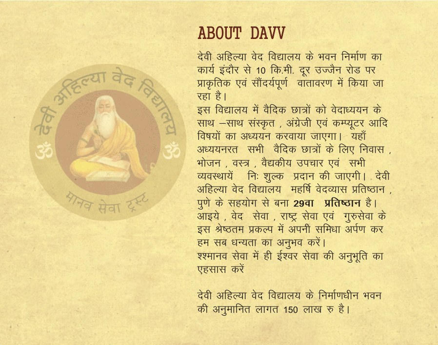
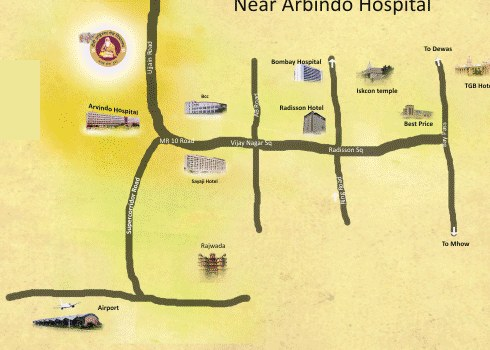

Devi Ahilya Ved Vidyalaya
देवी अहिल्या वेद विद्यालय — वेद सेवा, राष्ट्र सेवा एवं गुरु सेवा का श्रेष्ठ प्रकल्प
देवी अहिल्या वेद विद्यालय
देवी अहिल्या वेद विद्यालय के भवन निर्माण का कार्य इंदौर से 10 कि.मी. दूर उज्जैन रोड पर प्राकृतिक एवं सौंदर्यपूर्ण वातावरण में किया गया है।
इस विद्यालय में वैदिक छात्रों को वेदाध्ययन के साथ-साथ संस्कृत, अंग्रेजी एवं कम्प्यूटर आदि विषयों का अध्ययन करवाया जाता है। यहाँ अध्ययनरत सभी वैदिक छात्रों के लिए निवास, भोजन, वस्त्र, वैद्यकीय उपचार एवं सभी व्यवस्थाएँ निःशुल्क प्रदान की जाती हैं।
देवी अहिल्या वेद विद्यालय महर्षि वेदव्यास प्रतिष्ठान, पुणे के सहयोग से बना 29वा प्रतिष्ठान है। आइए, वेद सेवा, राष्ट्र सेवा एवं गुरु सेवा के इस श्रेष्ठतम प्रकल्प में अपनी समिधा अर्पण कर हम सब धन्यता का अनुभव करें।



HH Swami Shri Govind Dev Giriji Maharaj
HH Acharyashri is well-known not only in India but also in distant foreign countries thanks to his spellbinding discourses on Srimad Bhagavad Gita, Ramayan, Mahabharat and other ancient, holy books of spiritual sciences.
He received initiation of 'Paramhansa Sanyas' at the auspicious hands of HH Swami Satyamitrananda Giriji at Haridwar on the banks of river Ganga on Sunday, April 30, 2006, with the blessings of HH Shri Jayendra Saraswatiji, the chief of Kanchi Kamkoti Peeth. Following his Sanyas initiation he adorned a new name, Shri Govind Dev Giriji Maharaj.
Modern Facilities with Tradition and Values
10 Kms from Indore on the Indore-Ujjain Road, at Rewati Gram near Aurobindo Hospital.
देवी अहिल्या वेद विद्यालय के निर्माणाधीन भवन की अनुमानित लागत 150 लाख रु. है।

The Four Vedas
"Veda" means wisdom, knowledge or vision. The Vedas are considered the earliest literary record of Indo-Aryan civilization and the most sacred books of India, containing spiritual knowledge encompassing all aspects of life.
Hymns (richas) in praise of the deities; the oldest of the Vedas.
Mantras and procedures for yajna and rituals.
Mantras set to melody; regarded as the root of Indian music.
Mantras for daily life, health and the welfare of society.
Origin of the Vedas
The Vedas are probably the earliest documents of the human mind. As the ancient Hindus seldom kept historical records, it is difficult to determine the period of the Vedas with precision.
Who wrote the Vedas?
It is believed that humans did not compose the Vedas; they were handed down through generations by word of mouth, and were mainly compiled by Vyasa Krishna Dwaipayana around the time of Lord Krishna.
Vidyalaya Committee
Shri Ram Avtar Jaju
ChairmanShri Purshotam Purohit
SecretaryShri Aaradhy Baheti
TreasurerMembers: Shri Manohar Baheti, Shri Vishnu Bhagwan Goyal, Shri Naresh Randhar, Dr. Vijay Rajopadhyay, Shri Rajeev Lath, Shri Suresh Baheti, Shri Ghanshyam Baheti, Shri Pankaj Jaju, Shri Vijay Kumar Lath
Add Smiles to Their Future
Your contribution gives a child a safe home, education, nutritious food and values for life. Donations to Manav Seva Trust are eligible for tax exemption under Section 80-G.